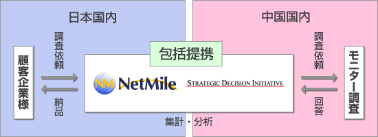

2008年2月14日
株式会社ネットマイル
ストラテジック・デシジョン・イニシアティブ株式会社
ネットマイル、ストラテジック・デシジョン・イニシアティブとリサーチ事業で包括提携
「中国・アジア市場のマーケティングリサーチサービスを開始！」
インターネット上の共通ポイントプログラムを運営する株式会社ネットマイル（本社：東京都千代田区、代表取締役社長：山本雅、以下、ネットマイル）と、企業向けに中国・アジア市場に特化したダイレクト・マーケティング事業を展開するストラテジック・デシジョン・イニシアティブ株式会社（本社：東京都港区 代表取締役 兼 CEO：森辺一樹 以下、SDI）と包括提携し、2008年2月14日（木）から、中国市場のマーケティングリサーチサービスの提供を開始します。
近年、中国は著しい消費力向上により、「世界の工場」から「世界の市場」としての役割が注目されております。それに伴い、マーケティング調査をはじめとする中国市場の実態把握を目的に、日本企業による中国市場に対するリサーチニーズが急速に増加しております。こうした背景から、ネットマイルはSDIと提携し、中国市場のリサーチサービス提供を開始いたします。
ネットマイルでは、当社が運営するインターネット上の共通ポイントプログラム「NetMile（ネットマイル）」の会員口座数376万口座（2008年1月末現在）を調査モニターとして活用した、インターネット調査サービス「ネットマイルリサーチ」を展開しています。この度のSDIとの包括提携により、顧客企業から多く要望があった「中国市場のマーケティングリサーチ」をサービスメニューに追加し、リサーチ事業の強化を図ります。
今後は、ネットマイルとSDI両社がそれぞれの得意分野や得意地域のリソースを持ち寄り、お客様のリサーチニーズを強固な体制でサポートしてまいります。将来的には、SDIを通じて中国企業から日本国内の市場調査を受注し、ビジネスをサポートしていく予定です。
ネットマイルでは、これからも376万ユーザーの利便性向上を目指し、共通ポイントプログラムの運営、およびユーザーサービスの拡充に努めてまいります。
スキーム

『NetMileリサーチ』サービス概要
「NetMileリサーチ」（URL： http://research.netmile.co.jp/）とは、当社が運営するインターネット上の共通ポイントプログラム「NetMile（ネットマイル）」の会員口座数376万口座を調査モニターとして活用した、インターネット調査サービスです。「NetMileリサーチ」のサービスメニューは以下の通りです。
| サービスメニュー |
内 容 |
| 1. |
ネットマイル会員をモニターとして活用する基本リサーチで、「NetMileリサーチ」のメインサービス。インターネットを利用することで、低コストかつスピーディな調査が可能。 |
| 2. |
小・中学生を対象としたインターネットリサーチサービス。 |
| 3. |
すでに自社で会員を所有している企業にアンケートシステムをASPで提供。 |
| 4. |
グループインタビュー、リクルーティング、郵送調査などを提供。 |
| 5. |
ストリーミング、複雑な機能を使ったアンケートなどを提供。 |
| 6. |
ブランド解析・消費者動向分析・モニタリングサービスの「bdb（ブランドデータバンク）」のデータベースを元に追跡調査を実施。 |
| 7. 分析・レポート |
NetMileリサーチで実施したアンケートの分析業務、レポート作成業務などを提供。 |
|
【株式会社ネットマイルについて】
http://www.netmile.co.jp/
2000年11月設立。三井物産株式会社の連結子会社で、インターネット上の共通ポイントプログラム「ネットマイル」を運営。同社のIT事業戦略の一端を担う。
「ネットマイル」は、2001年4月にサービスを開始。加盟サイト数976社、会員口座数376万口座（2008年1月末現在）の規模は、日本最大級。
2007年12月、インターネット業界最大規模のオンラインイベントである『 Web of the Year 2007 』ポイント部門で第1位に選ばれる。
| 社名 |
株式会社ネットマイル |
| 代表取締役 |
山本 雅 |
| 所在地 |
〒101-0054 東京都千代田区神田錦町3-26 一ツ橋 SIビル 9F |
| 資本金 |
396百万円 |
| 設立 |
2000年11月7日 |
| 事業内容 |
1：インターネット市場におけるユニバーサルポイントプログラム「ネットマイル」のサービスを運営
2：ネットマイル会員を活用した、大規模ネットリサーチの運営 |
| 出資企業 |
三井物産株式会社 / トランス・コスモス株式会社 / 三菱UFJニコス株式会社 / みずほキャピタル株式会社 |
|
【ストラテジック・デシジョン・イニシアティブについて】
http://www.sdigrp.com/
2002年、前身であるSDI香港法人を設立、2007年3月、本社を東京へ移転。
中国・アジア市場に特化した“リサーチとダイレクトマーケティング”の各種サービスを提供。リサーチ事業で「市場を明らか」にし、ダイレクト・マーケティング事業で、その後の「現地販売を支援」。その他、現地法人設立・M＆A等の各種コンサルティングサービス、中国調達のサポートも行い、お客様の「中国・アジアビジネスをもっと簡単にする」会社です。
| 社名 |
ストラテジック・デシジョン・イニシアティブ株式会社 |
| 代表取締役 |
森辺 一樹 |
| 所在地 |
〒105-0014 東京都港区芝3-14-4 NB三田ビル 6階 |
| 資本金 |
1億5,375万円 （※資本準備金含む） |
| 設立 |
2007年3月 （※2002年7月に前身となるSDI香港法人を設立） |
| 事業内容 |
中国・アジア市場に特化したリサーチ＆ダイレクト・マーケティング事業、プロキュアメント・アウトソーシング事業、コンサルティング事業。 |
| 出資企業 |
日本アジア投資 / りそなキャピタル / オリックス・キャピタル / エヌ・アイ・エフSMBCベンチャーズ
|
|
＜当リリースに関する一般お問い合わせ先＞
株式会社ネットマイル リサーチ事業部
Email ：
URL ： http://research.netmile.co.jp/
＜当リリースに関する報道関係者お問い合わせ先＞
株式会社ネットマイル 広報担当：江澤・村井
Email ： 
TEL ： 
|